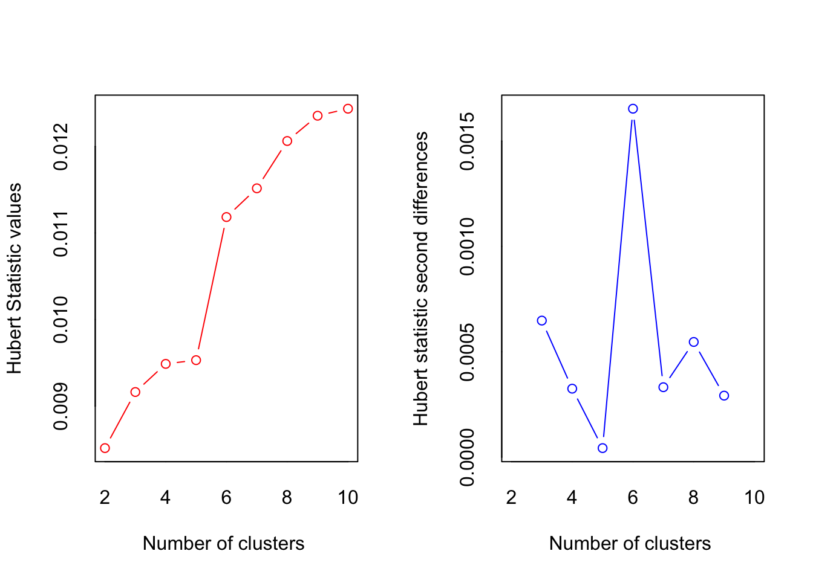

Computing k-means clustering in R (USArrests)
2019-09-08
Inspired by this post.
Weaknesses of k-means algorithm:
It assumes prior knowledge of the data and requires the analyst to choose the appropriate number of cluster (k) in advance
The final results obtained is sensitive to the initial random selection of cluster centers. Why is it a problem? Because, for every different run of the algorithm on the same dataset, you may choose different set of initial centers. This may lead to different clustering results on different runs of the algorithm.
It’s sensitive to outliers.
If you rearrange your data, it’s very possible that you’ll get a different solution every time you change the ordering of your data.
Possible solutions ot these weaknesses:
Solution to issue 1: Compute k-means for a range of k values, for example by varying k between 2 and 10. Then, choose the best k by comparing the clustering results obtained for the different k values.
Solution to issue 2: Compute K-means algorithm several times with different initial cluster centers. The run with the lowest total within-cluster sum of square is selected as the final clustering solution.
To avoid distortions caused by excessive outliers, it’s possible to use PAM algorithm, which is less sensitive to outliers.
df <- USArrests
names(df)## [1] "Murder" "Assault" "UrbanPop" "Rape"head(df)## Murder Assault UrbanPop Rape
## Alabama 13.2 236 58 21.2
## Alaska 10.0 263 48 44.5
## Arizona 8.1 294 80 31.0
## Arkansas 8.8 190 50 19.5
## California 9.0 276 91 40.6
## Colorado 7.9 204 78 38.7summary(df)## Murder Assault UrbanPop Rape
## Min. : 0.800 Min. : 45.0 Min. :32.00 Min. : 7.30
## 1st Qu.: 4.075 1st Qu.:109.0 1st Qu.:54.50 1st Qu.:15.07
## Median : 7.250 Median :159.0 Median :66.00 Median :20.10
## Mean : 7.788 Mean :170.8 Mean :65.54 Mean :21.23
## 3rd Qu.:11.250 3rd Qu.:249.0 3rd Qu.:77.75 3rd Qu.:26.18
## Max. :17.400 Max. :337.0 Max. :91.00 Max. :46.00df <- scale(df)
head(df)## Murder Assault UrbanPop Rape
## Alabama 1.24256408 0.7828393 -0.5209066 -0.003416473
## Alaska 0.50786248 1.1068225 -1.2117642 2.484202941
## Arizona 0.07163341 1.4788032 0.9989801 1.042878388
## Arkansas 0.23234938 0.2308680 -1.0735927 -0.184916602
## California 0.27826823 1.2628144 1.7589234 2.067820292
## Colorado 0.02571456 0.3988593 0.8608085 1.864967207library(ggplot2)
library(factoextra)## Welcome! Related Books: `Practical Guide To Cluster Analysis in R` at https://goo.gl/13EFCZSearching for optimal K
Elbow method
#fviz_nbclust(x, FUNcluster, method = c("silhouette", "wss", "gap_stat"))
# Elbow method
fviz_nbclust(df, kmeans, method = "wss") +
geom_vline(xintercept = 4, linetype = 2)+
labs(subtitle = "Elbow method")Silhouette method
# Silhouette method
fviz_nbclust(df, kmeans, method = "silhouette")+
labs(subtitle = "Silhouette method")Gap Statistics method
# Gap statistic
# nboot = 50 to keep the function speedy.
# recommended value: nboot= 500 for your analysis.
# Use verbose = FALSE to hide computing progression.
set.seed(123)
fviz_nbclust(df, kmeans, nstart = 25, method = "gap_stat", nboot = 70)+
labs(subtitle = "Gap statistic method")
Suggested values of k are 2, 3, and 4.
NbClust() function
library("NbClust")
nb <- NbClust(df, distance = "euclidean", min.nc = 2, max.nc = 10, method = "kmeans")
## *** : The Hubert index is a graphical method of determining the number of clusters.
## In the plot of Hubert index, we seek a significant knee that corresponds to a
## significant increase of the value of the measure i.e the significant peak in Hubert
## index second differences plot.
## ## *** : The D index is a graphical method of determining the number of clusters.
## In the plot of D index, we seek a significant knee (the significant peak in Dindex
## second differences plot) that corresponds to a significant increase of the value of
## the measure.
##
## *******************************************************************
## * Among all indices:
## * 11 proposed 2 as the best number of clusters
## * 2 proposed 3 as the best number of clusters
## * 1 proposed 4 as the best number of clusters
## * 1 proposed 5 as the best number of clusters
## * 7 proposed 6 as the best number of clusters
## * 1 proposed 9 as the best number of clusters
## * 1 proposed 10 as the best number of clusters
##
## ***** Conclusion *****
##
## * According to the majority rule, the best number of clusters is 2
##
##
## *******************************************************************set.seed(101)# Compute k-means with k = 4
km.res <- kmeans(df, 4, nstart = 25)print(km.res)## K-means clustering with 4 clusters of sizes 13, 16, 8, 13
##
## Cluster means:
## Murder Assault UrbanPop Rape
## 1 0.6950701 1.0394414 0.7226370 1.27693964
## 2 -0.4894375 -0.3826001 0.5758298 -0.26165379
## 3 1.4118898 0.8743346 -0.8145211 0.01927104
## 4 -0.9615407 -1.1066010 -0.9301069 -0.96676331
##
## Clustering vector:
## Alabama Alaska Arizona Arkansas California
## 3 1 1 3 1
## Colorado Connecticut Delaware Florida Georgia
## 1 2 2 1 3
## Hawaii Idaho Illinois Indiana Iowa
## 2 4 1 2 4
## Kansas Kentucky Louisiana Maine Maryland
## 2 4 3 4 1
## Massachusetts Michigan Minnesota Mississippi Missouri
## 2 1 4 3 1
## Montana Nebraska Nevada New Hampshire New Jersey
## 4 4 1 4 2
## New Mexico New York North Carolina North Dakota Ohio
## 1 1 3 4 2
## Oklahoma Oregon Pennsylvania Rhode Island South Carolina
## 2 2 2 2 3
## South Dakota Tennessee Texas Utah Vermont
## 4 3 1 2 4
## Virginia Washington West Virginia Wisconsin Wyoming
## 2 2 4 4 2
##
## Within cluster sum of squares by cluster:
## [1] 19.922437 16.212213 8.316061 11.952463
## (between_SS / total_SS = 71.2 %)
##
## Available components:
##
## [1] "cluster" "centers" "totss" "withinss"
## [5] "tot.withinss" "betweenss" "size" "iter"
## [9] "ifault"Interpreting results of kmeans()function
kmeans() function returns a list of components, including:
- cluster: A vector of integers (from 1:k) indicating the cluster to which each point is allocated
- centers: A matrix of cluster centers (cluster means)
- totss: The total sum of squares (TSS), i.e ∑(xi−x¯)2. TSS measures the total variance in the data.
- withinss: Vector of within-cluster sum of squares, one component per cluster
- tot.withinss: Total within-cluster sum of squares, i.e. sum(withinss)
- betweenss: The between-cluster sum of squares, i.e. totss−tot.withinss
- size: The number of observations in each cluster
These components can be accessed as follows:
# Cluster number for each of the observations
head(km.res$cluster, 4)## Alabama Alaska Arizona Arkansas
## 3 1 1 3# Cluster size
km.res$size## [1] 13 16 8 13# Cluster means
km.res$centers## Murder Assault UrbanPop Rape
## 1 0.6950701 1.0394414 0.7226370 1.27693964
## 2 -0.4894375 -0.3826001 0.5758298 -0.26165379
## 3 1.4118898 0.8743346 -0.8145211 0.01927104
## 4 -0.9615407 -1.1066010 -0.9301069 -0.96676331The above cluster centers are not very clear as they are centers of the scaled data.
It is possible to compute the means of each cluster using the original data:
aggregate(USArrests, by=list(cluster=km.res$cluster), mean)## cluster Murder Assault UrbanPop Rape
## 1 1 10.81538 257.38462 76.00000 33.19231
## 2 2 5.65625 138.87500 73.87500 18.78125
## 3 3 13.93750 243.62500 53.75000 21.41250
## 4 4 3.60000 78.53846 52.07692 12.17692Adding new cluster column to the original data:
dd <- cbind(USArrests, cluster = km.res$cluster)
head(dd)## Murder Assault UrbanPop Rape cluster
## Alabama 13.2 236 58 21.2 3
## Alaska 10.0 263 48 44.5 1
## Arizona 8.1 294 80 31.0 1
## Arkansas 8.8 190 50 19.5 3
## California 9.0 276 91 40.6 1
## Colorado 7.9 204 78 38.7 1PCA
library(FactoMineR)
res.pca <- PCA(df, graph=FALSE)
res.pca## **Results for the Principal Component Analysis (PCA)**
## The analysis was performed on 50 individuals, described by 4 variables
## *The results are available in the following objects:
##
## name description
## 1 "$eig" "eigenvalues"
## 2 "$var" "results for the variables"
## 3 "$var$coord" "coord. for the variables"
## 4 "$var$cor" "correlations variables - dimensions"
## 5 "$var$cos2" "cos2 for the variables"
## 6 "$var$contrib" "contributions of the variables"
## 7 "$ind" "results for the individuals"
## 8 "$ind$coord" "coord. for the individuals"
## 9 "$ind$cos2" "cos2 for the individuals"
## 10 "$ind$contrib" "contributions of the individuals"
## 11 "$call" "summary statistics"
## 12 "$call$centre" "mean of the variables"
## 13 "$call$ecart.type" "standard error of the variables"
## 14 "$call$row.w" "weights for the individuals"
## 15 "$call$col.w" "weights for the variables"library("factoextra")
eig.val <- get_eigenvalue(res.pca)
eig.val## eigenvalue variance.percent cumulative.variance.percent
## Dim.1 2.4802416 62.006039 62.00604
## Dim.2 0.9897652 24.744129 86.75017
## Dim.3 0.3565632 8.914080 95.66425
## Dim.4 0.1734301 4.335752 100.00000fviz_eig(res.pca, addlabels = TRUE, ylim = c(0, 80))
86.7% of the information is explained by two principal components.
var <- get_pca_var(res.pca)
var## Principal Component Analysis Results for variables
## ===================================================
## Name Description
## 1 "$coord" "Coordinates for the variables"
## 2 "$cor" "Correlations between variables and dimensions"
## 3 "$cos2" "Cos2 for the variables"
## 4 "$contrib" "contributions of the variables"head(var$coord)## Dim.1 Dim.2 Dim.3 Dim.4
## Murder 0.8439764 -0.4160354 0.2037600 0.27037052
## Assault 0.9184432 -0.1870211 0.1601192 -0.30959159
## UrbanPop 0.4381168 0.8683282 0.2257242 0.05575330
## Rape 0.8558394 0.1664602 -0.4883190 0.03707412head(var$cos2)## Dim.1 Dim.2 Dim.3 Dim.4
## Murder 0.7122962 0.1730854 0.04151814 0.073100217
## Assault 0.8435380 0.0349769 0.02563817 0.095846950
## UrbanPop 0.1919463 0.7539938 0.05095143 0.003108430
## Rape 0.7324611 0.0277090 0.23845544 0.001374491head(var$contrib)## Dim.1 Dim.2 Dim.3 Dim.4
## Murder 28.718825 17.487524 11.643977 42.149674
## Assault 34.010315 3.533859 7.190358 55.265468
## UrbanPop 7.739016 76.179065 14.289594 1.792325
## Rape 29.531844 2.799553 66.876071 0.792533# Coordinates of variables
head(var$coord, 4)## Dim.1 Dim.2 Dim.3 Dim.4
## Murder 0.8439764 -0.4160354 0.2037600 0.27037052
## Assault 0.9184432 -0.1870211 0.1601192 -0.30959159
## UrbanPop 0.4381168 0.8683282 0.2257242 0.05575330
## Rape 0.8558394 0.1664602 -0.4883190 0.03707412fviz_pca_var(res.pca, col.var = "black")
library("corrplot")## corrplot 0.84 loadedcorrplot(var$cos2, is.corr=FALSE)# Total cos2 of variables on Dim.1 and Dim.2
fviz_cos2(res.pca, choice = "var", axes = 1:2)
# Color by cos2 values: quality on the factor map
fviz_pca_var(res.pca, col.var = "cos2",
gradient.cols = c("#00AFBB", "#E7B800", "#FC4E07"),
repel = TRUE # Avoid text overlapping
)
head(var$contrib, 4)## Dim.1 Dim.2 Dim.3 Dim.4
## Murder 28.718825 17.487524 11.643977 42.149674
## Assault 34.010315 3.533859 7.190358 55.265468
## UrbanPop 7.739016 76.179065 14.289594 1.792325
## Rape 29.531844 2.799553 66.876071 0.792533library("corrplot")
corrplot(var$contrib, is.corr=FALSE) 
# Contributions of variables to PC1
fviz_contrib(res.pca, choice = "var", axes = 1, top = 4)
# Contributions of variables to PC2
fviz_contrib(res.pca, choice = "var", axes = 2, top = 4)
fviz_contrib(res.pca, choice = "var", axes = 1:2, top = 10)
The most important contributing variables:
fviz_pca_var(res.pca, col.var = "contrib",
gradient.cols = c("#00AFBB", "#E7B800", "#FC4E07")
)
Color by a custom continuing variable:
# Create a random continuous variable of length 10
set.seed(101)
my.cont.var <- rnorm(4)
# Color variables by the continuous variable
fviz_pca_var(res.pca, col.var = my.cont.var,
gradient.cols = c("blue", "yellow", "red"),
legend.title = "Cont.Var")
fviz_pca_ind(res.pca,
geom.ind = "point", # show points only (nbut not "text")
#col.ind = res.pca$Species, # color by groups
palette = c("#00AFBB", "#E7B800", "#FC4E07"),
addEllipses = TRUE, # Concentration ellipses
legend.title = "Groups"
)fviz_pca_biplot(res.pca, repel = TRUE,
col.var = "#2E9FDF", # Variables color
col.ind = "#696969" # Individuals color
)